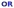

Workflow Designer
Workflow Designer provides graphical user interface to design a workflow by dragging and dropping.

On the left is the toolbox, click each tool to use it.
Pointer 
Press ESC anytime to select Pointer.
Under Pointer mode, you are able to:
- select a node or connect by clicking it.
- open property window of node or connect by shift-clicking it
- move a node by dragging it.
- move a connection by clicking it while holding ALT key (Opt key on Mac OsX), release ALT key, then click on another node should be connected.
- pan canvas by clicking on blank area of canvas then dragging it.
Activity 
Press 1 anytime to select Activity
An activity is a task need to be done by human.
Operations
- Click on canvas to place an Activity node
- Shift-Click on an Activity to open it's properties
- Drag it to move to another location
Participant
Define task participants with Role Definition String,
See PDS page for details
Instruction
Give some instructions to people who take part in this task
Simple html tag is allowed
Handlbars format is used to include process variables. If a previous node has a variable named "days", then, {{days.value}} can be included in instruction to embed it's value in instruction.
Variables
define variable name, type etc.
- Name: variable name.
- should be a valid javascript varible name, invalid name will make your workflow fails to run.
- varialbe name prefix determin its input type:
- "email_" : an email type input.
- "password_" : an password type input.
- "url_" : an url type input.
- "range_" : an range type input.
- "number_" : an number type input.
- "dt_" : an datetime type input.
- "datetime_" : an datetime type input.
- "date_" : an date type input.
- "time_" : an time type input.
- "color_" : an color type input.
- "search_" : an search type input.
- "select_" : an select type input.
- "sl_" : an select type input.
- "sel_" : an select type input.
- "file_" : an file type input.
- "radio_" : a radio type input.
- "textarea_" : a textarea type input.
- "checkbox_": a checkbox type input.
- "cb_": a checkbox type input.
- any other name : a normal input.
- Option: the pickable options for this variable input
- options should be delimited by semicolon (;), for example "option1;option2;option3";
- options can also get from a pre-defined list.
- A list is defined in a list group.
- A list has it's own key in a list group.
- "R:list_group_name" to get default items from a list group.
- "R:list_group_name:key" to get items from a list group by key.
- list can be cascaded To make cascaded list. you may:
- use T:cascade_list_name, for example, you may have province list "select_A" defined as "R:province_list;T:select_B", then, you may define select_B as "R:city_list", then, once use pick a province from select_A, select_B will get the selected value from select_A, and use it as list key to refresh options for select_B, say, get all cities of the selected city.
- Value: the default value of this input.
- for normal input, the default value will be set in the input box.
- for select/checkbox/radio, the default value will be selected.
- Label: The label of this vairable.
- Placeholder: the placeholder for input or textarea
- Break Row: add a new line after this variable
- ID: give it an optional ID
- Required: this variable's value must be provided.
- Visible: use PDS to define whom this var should be visiable to
About Visible
Sometime, some sensitive data might should be kept secret from some participants even they have been involved in the process. For instance, in a interview process, the offered salary may not be able to seen by interviewer, only HR and manager could see it, thus, we may use PDS to make this happend.
Inform 
- Press 2 at anytime to use Inform An Inform node is used to send message to people.
Operations
- Click on canvas to place an Inform node
- Shift-Click on an Inform to open it's properties
- Drag it to move to another location
Recipiants:
- Who will receive emails, define use PDS
Subject and Content:
- may use simple html or Handlebars to embed process variables
Script 
- Press 3 at anytime to use Script
Operations
- Click on canvas to place an Script node
- Shift-Click on an Script to open it's properties
- Drag it to move to another location
Sync Mode
Run script in sync mode
Async Mode
Run script in async mode, external program callback to MetatoCome later to make it continue.
Code
Embed any javascript code in this node.
Return value
ret = RET_VALUE;
Return value is used as routing option to decide where to go after this script node.
Insert any variable
kvar(var_name, var_value, var_label)
After that, thsi variable named 'var_name' is available for following process.
** If a varialbe named "var_name" exists, it's value will be overwrite with this one.
Get value of variable.
kvalue(var_name)
Set inner Team
Dynamically set a team for use later.
setRoles({
SGT: "ab@email.com",
DIRECTOR: "cd@email.com",
});
For steps after this script, any task assigned to role 'SGT' will go to a person whose email is "ab@email.com", any task assigned to role "DIRECTOR" will go to a person whose email is "cd@email.com"
Timer 
A TIMER node is used to control process running time, the process only run through this node when
- From Start: how long after the start of the whole process
- From Now: how long after the invoking of this Timer node(end of previous node).
- Fix: Specific date and time
Sub Process 
An sub-processs will be invoked to run, and the parent process will continue only when the sub-process has been completed.
sub-process's last return value will be taken as the return value from sub-process, parent process will use it to determine where to go after it.
An sub-process can also run in standalone mode, therefore, the parent process will not wait for it's completing.
AND 
An AND node will make process wait for completion of all it's precedent nodes.
OR 
Any precedent node is completed, an OR node will be went through, process will navigate to the following nodes of OR.
An AND node will make process wait for completion of all it's precedent nodes.
Ground 
A Ground node could have no folloing nodes, means the routing is grounded or sink.
Connect
Connect two nodes to define a route between them. Click one node, then click another node, a curved line will be drawn between them. Shift-clicking on a connection will bring up the connection property window, simply give the connection a Case Value (a string), the Case Value will be displayed alongside of the connection line. this case value will be used to determine whether or not this route will be taken or not after it's FROM node has been completed.
A connection between two nodes has direction, it always point from one node (A) to another (B), means that the workflow should run from task A to task B.
A connection can have option, option define the route. for example, there is one connection between A to B, there is another connection between A to C, if we give A to B an option value 1, and give A to C an option value 2, then, if A return 2, the workflow will run to C, B will not be routed to. if A is an activity, the user who do that activity will be presented with option 1 and 2 to decide. if A is a script, you may use "ret=2" to return 2 from node A.
Build a connection
- Select CONNECT tool , or simple press 9, the CONNECT tool will be highlighted
- Click on the first node A,
- Click on the second node B
Move a connection
- Hold Alt key (MAC: Opt), click on the first half of a connection then pick another node to re-select its' staring node
- Hold Alt key (MAC: Opt), click on the second half of a connection then pick another node to re-select it's ending node
Cancel connecting
If you would like to cancel while connecting, double click on blank area of canvas, or press ESC
Delete a connection
- Mouse over a connection, then press Backspace or Delete
Give connection a value
- Hold Shift key, click on a connection, input is option value in the pop-up.
Editing
Desginer support copy,paste, cut etc., as well as shortcut keys to ease your opertions..
Nodes Copy and Paste
While mouse is hovering a node , press Ctrl-C (Win) / Cmd-C (Mac) to copy it, move mouse to any position on the canvas, proess Ctrl-V (Win) / Cmd-C (Mac) to paste it.
While mouse is hovering a node, press Ctrl-X (Win) /Cmd-X (Mac) to cut it, later, you may paste the cutted node at another location wil Ctrol-V (Win) /Cmd-V (Mac)
Connext Routing Text
While mouse is hovering a connection , press Ctrl-C (Win) / Cmd-C (Mac) to copy it's routing label, move mouse to hover another connection, proess Ctrl-V (Win) / Cmd-C (Mac) to paste it.
Keyboard shortcut
d
Mouse over a node or a connection, press d to delete it.
gb
Mouse over a connection, press "gb" to move it's starting point
ge
Mouse over a connection, press "ge" to move it's ending point
gt
Mouse over a node, press "gt" to link it to another node